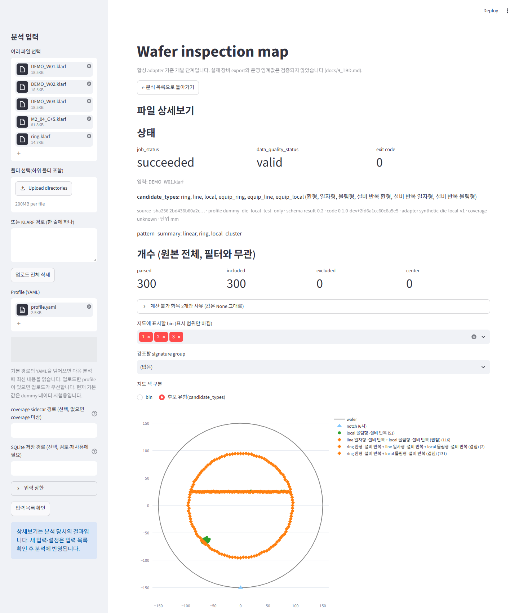
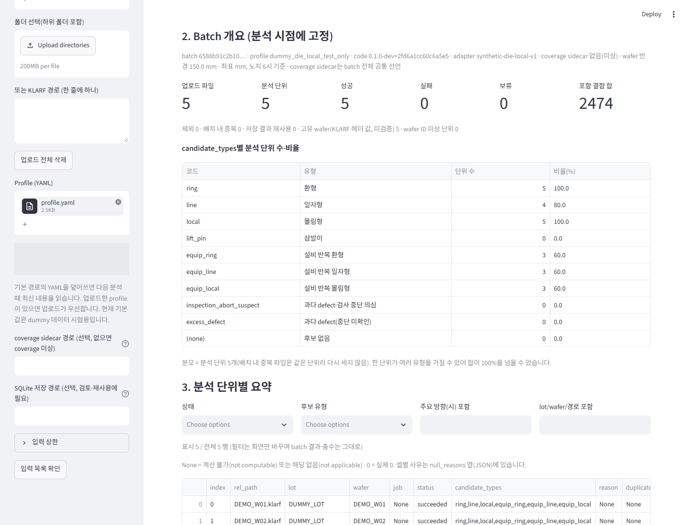
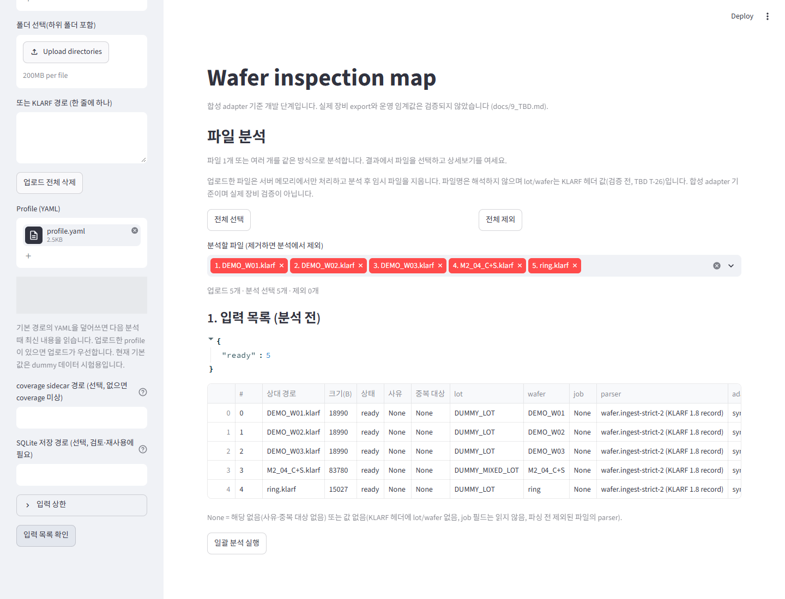
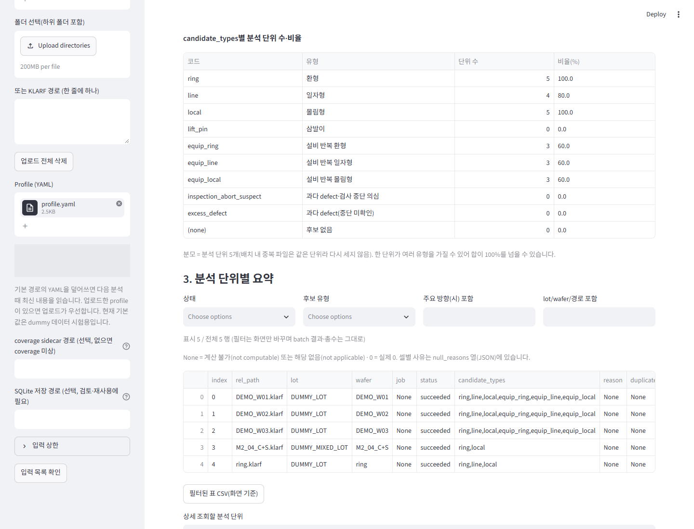
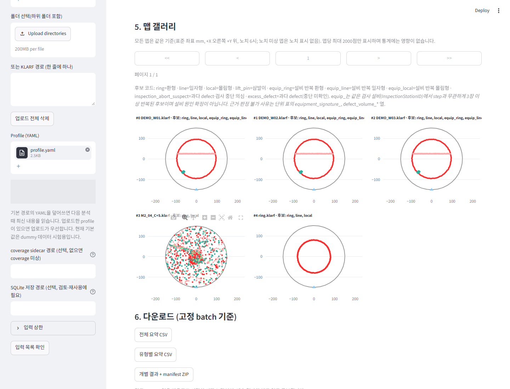
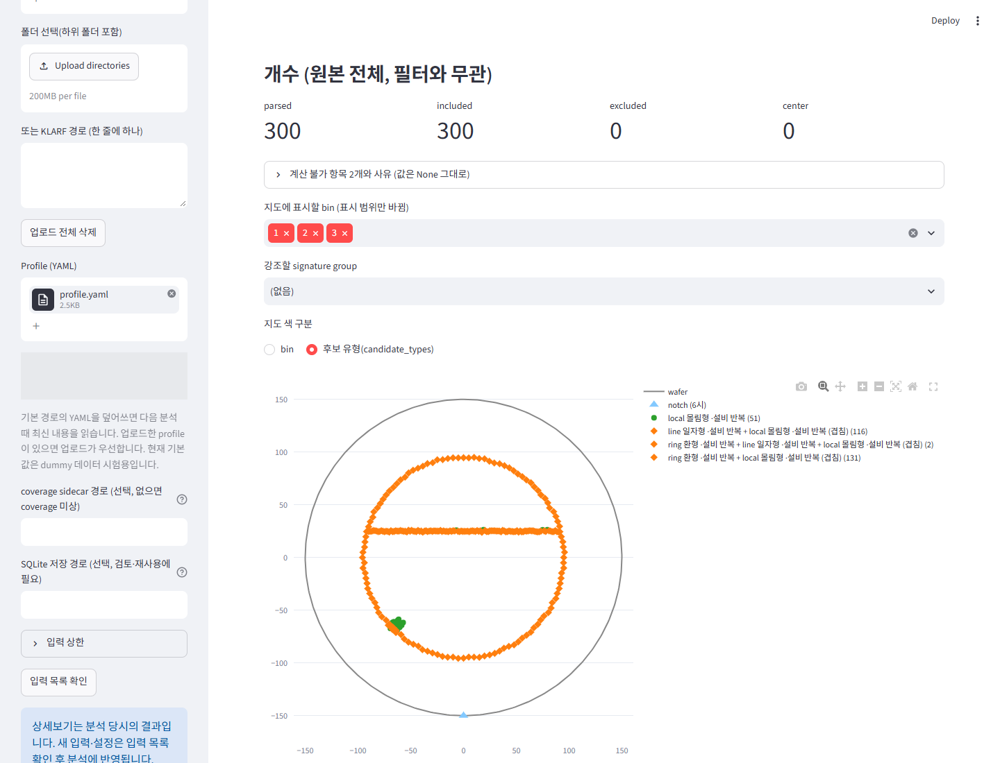
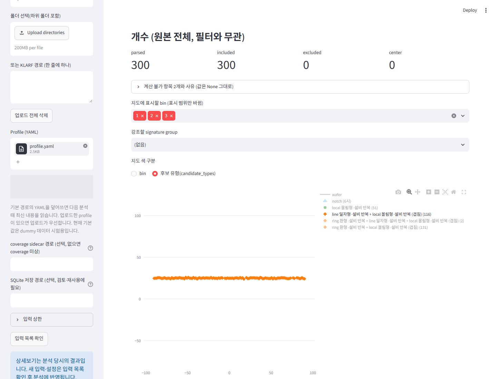
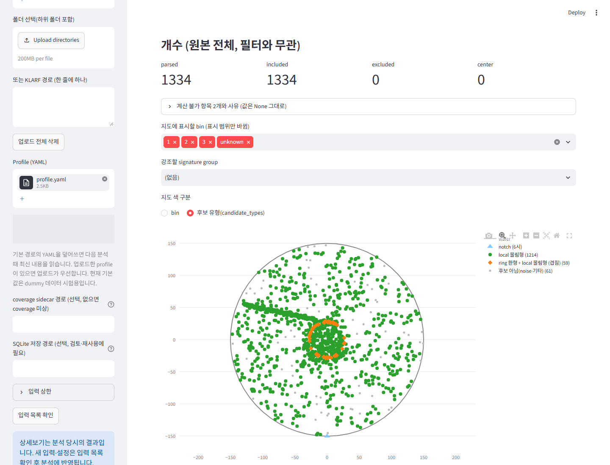
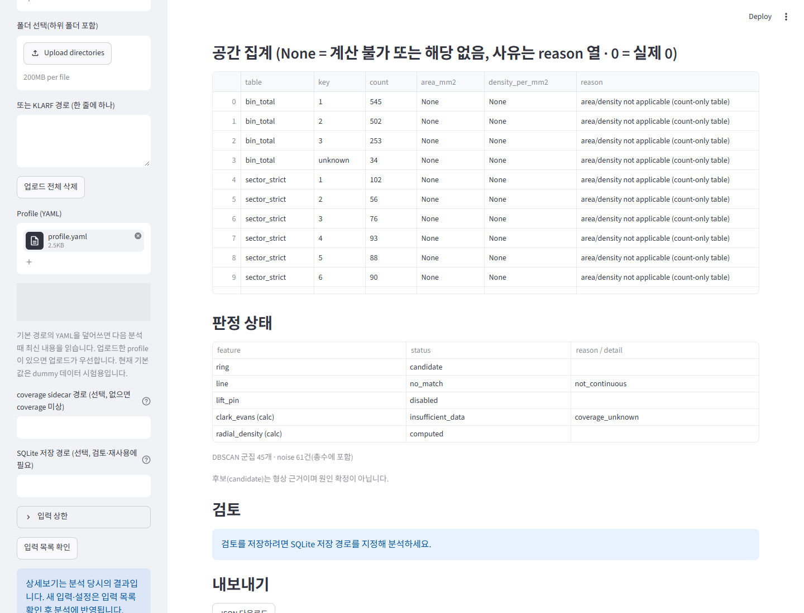
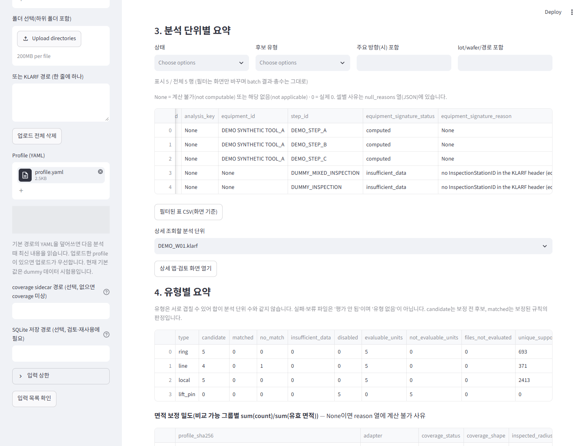

01 / 앱의 목적
먼저 볼 세 가지
① 여러 파일을 한 번에파일별 실행 상태와 후보 유형을 한 표에서 비교하고, 전체 결과를 내려받습니다.
② 분포를 눈으로 확인wafer map에서 위치와 형태를 보고, bin 또는 후보 유형 legend로 관심 분포를 구분합니다.
③ 같은 검사 설비의 반복 검토서로 다른 wafer·step의 반복 환형·선형·몰림 후보를 찾아 관련 map을 비교합니다.
파일 입력→다중 파일 분석→요약 확인→map·legend 탐색→설비성 후보 검토
이 앱의 결과는 검토의 출발점입니다. 후보는 공정 원인 확정이 아닙니다. 현재 앱은 합성 adapter 기준 개발 단계로, 실제 장비 export와 운영 임계값 검증은 완료되지 않았습니다.

실제 상세 분석 화면 · DEMO_W01. 환형과 수평선, 국부 몰림이 함께 있는 설명용 합성 map입니다. 주황 마름모는 유형이 겹친 점입니다. 클릭하여 확대상태·map·판정 표를 포함한 전체 상세 화면 원본 열기 · 화면의 회색 가림 영역은 불필요한 로컬 profile 경로입니다.
02 / 빠른 시작
예제 5개로 처음부터 따라 하기
배포 ZIP을 풀고 index.html을 엽니다. 안내서는 인터넷 없이 읽을 수 있습니다. 분석을 따라 하려면 프로젝트와 Python 실행 환경이 별도로 필요합니다. ZIP은 앱 설치본이 아닙니다.
앱이 아직 열려 있지 않다면
프로젝트 루트는 README.md·requirements.txt·wafer 폴더가 있는 폴더입니다. 준비된 Python 환경이 있으면 활성화 후 아래 실행 명령으로 진행하세요. 새 Windows 환경은 Python 3.11 또는 3.12(64-bit)를 준비하고 그 폴더에서 다음 순서로 설정합니다.
python -m venv .venv
.\.venv\Scripts\Activate.ps1
python -m pip install -r requirements.txt
python -m pip check
패키지 최초 설치에는 인터넷과 환경별 준비가 필요합니다. 사내 환경의 설치 정책이나 오류가 있으면 환경 관리자와 프로젝트 README를 확인하세요. 안내서 열람 자체에는 설치가 필요 없습니다.python -m streamlit run wafer/app.py
터미널에 표시되는 Local URL을 브라우저로 엽니다. 화면 제목은 Wafer inspection map입니다.
- 입력 파일과 profile 준비
이 안내서의 examples/ 폴더에서 KLARF 5개와 profile.yaml을 준비합니다. profile은 프로젝트 기본 합성 시험 설정의 동일 복사본입니다. 운영 데이터용 설정으로 사용하지 않습니다.
- 왼쪽 ‘여러 파일 선택’에 KLARF 5개 입력
Browse files로 5개를 함께 선택하거나 끌어 놓습니다. 이어서 ‘Profile (YAML)’에 profile.yaml을 업로드합니다. 업로드 profile이 ‘또는 profile 경로’보다 우선합니다. ‘폴더 선택(하위 폴더 포함)’도 지원하지만 이번 예시는 파일 선택으로 진행합니다.
- 분석 대상 확인
본문의 ‘분석할 파일 (제거하면 분석에서 제외)’에서 5개가 선택됐는지 확인합니다. ‘업로드 5개 · 분석 선택 5개 · 제외 0개’가 기준입니다. coverage와 SQLite 경로는 이번 시연처럼 비워 두어도 됩니다. coverage가 없으면 면적 보정 밀도는 계산 불가입니다.
- ‘입력 목록 확인’ 클릭
왼쪽 사이드바를 아래로 내려 버튼을 누릅니다. 본문의 ‘1. 입력 목록 (분석 전)’에서 상태가 ready인지 확인합니다. 오류·제외가 있으면 사유를 확인하고 파일·profile을 수정한 뒤 다시 목록을 확인합니다.
- ‘일괄 분석 실행’ 클릭
입력 목록 표 아래 버튼을 누르고 진행 표시가 끝날 때까지 기다립니다. ‘2. Batch 개요 (분석 시점에 고정)’에서 이번 예제는 분석 단위 5, 성공 5, 실패 0, 포함 결함 합 2,474로 표시됩니다.
- 요약 → 상세 map으로 이동
‘3. 분석 단위별 요약’에서 파일명·status·candidate_types를 봅니다. 표 아래 ‘상세 조회할 분석 단위’에서 같은 파일을 고른 뒤 ‘상세 맵·검토 화면 열기’를 누릅니다. 상세 상단 ‘← 분석 목록으로 돌아가기’로 복귀합니다.
동작 1 · 파일 입력에서 분석 개요까지

실제 앱 조작의 주요 화면을 이어 붙인 약 9초 요약 · 대기·이동 구간 생략 · 실제 처리 속도 아님
- 할 행동
- KLARF 5개와 profile을 업로드하고 입력 목록 확인 → 일괄 분석 실행을 누릅니다.
- 관찰할 변화
- 선택 파일 목록 → ready 목록 → 분석 개요로 바뀝니다.
- 업무상 의미
- 실행 성공과 후보 판정을 구분하면서 여러 파일의 분석 완료를 한 번에 확인합니다.

분석 직전 · 입력 목록 ready 5개를 확인한 뒤 표 아래 ‘일괄 분석 실행’을 누릅니다. 클릭하여 확대입력 파일·선택·profile 등 설정을 바꾸면 기존 목록과 결과가 초기화됩니다. 필요한 CSV/ZIP을 먼저 내려받으세요. 상세에서 단순히 목록으로 돌아오는 동작은 기존 결과를 유지합니다.
03 / 다중 파일 분석
실행 성공과 패턴 후보를 따로 읽습니다

분석 단위별 요약 · status 바로 다음이 candidate_types입니다. M2_04_C+S는 succeeded이지만 line 후보는 없습니다. 클릭하여 확대| 주요 컬럼 | 읽는 방법 |
|---|
| index / rel_path / lot / wafer | 관심 결과와 map을 맞추는 식별자입니다. lot·wafer는 KLARF 헤더 값이며 실제 식별의 정확성은 별도 확인합니다. 파일명에서 유형을 판정하지 않습니다. |
| status / reason | succeeded는 처리 성공입니다. failed·invalid_input은 실패/입력 문제, held는 보류, excluded는 제외입니다. duplicate_in_batch는 동일 내용 중복이며 분석·합계에 다시 더하지 않습니다. 사유를 함께 읽습니다. |
| candidate_types | ring 환형, line 일자형(선형), local 몰림형 등과 배치의 equip_* 후보 목록입니다. 복수 유형이 함께 나올 수 있습니다. 빈 값은 후보 없음, 미분석 행의 None은 평가되지 않음입니다. |
| n_included / bins | 분석에 포함된 defect 이벤트 수와 원본 bin별 개수입니다. 불량 die 수나 수율로 바꾸어 읽지 않습니다. |
| ring_* / line_* / *_support | 환형 반경·두께, 선형 길이·폭·방향, 후보에 속한 점 수 등입니다. 계산 가능한 항목을 비교하며 겹치는 후보 수를 단순 합산하지 않습니다. |
| equipment_id / step_id / equipment_signature_* | 검사 설비, 검사 step, 반복 비교 상태·사유·연결 근거입니다. 가로 스크롤하여 오른쪽 컬럼을 확인합니다. |
| density_per_mm2 / null_reasons | 유효 검사면적이 있어야 밀도를 계산합니다. None·CSV 빈 칸은 미계산/해당 없음이며 실제 0과 다릅니다. null_reasons에서 이유를 봅니다. |
상태/후보 유형/주요 방향(시) 포함/lot/wafer/경로 포함으로 요약 표를 좁힐 수 있습니다. 필터는 표시와 ‘필터된 표 CSV(화면 기준)’에만 적용됩니다. 전체 개요·원본 결과·갤러리·상세 선택 목록은 그대로입니다.
관심 map 찾기: 표의 index와 rel_path를 기억하고 ‘5. 맵 갤러리’의 제목 #index 파일명 · 후보: …를 맞춥니다. 상세는 위의 선택 목록과 버튼으로 엽니다. 표 행이나 갤러리를 눌러 상세로 이동하는 기능은 없습니다.

실제 맵 갤러리 · 앞의 3개는 같은 분포에 서로 다른 합성 wafer·step 헤더를 준 반복 시연입니다. 긴 candidate_types 제목은 화면 폭에 따라 잘리므로 요약 표와 상세에서 전체 값을 확인합니다. 클릭하여 확대갤러리는 페이지당 최대 12개, 각 map은 최대 2,000점의 축소 표시입니다. 통계는 전체 포함 점을 사용합니다. 이번 5개 파일은 모두 2,000점 미만입니다. 후보 비율은 성공한 분석 단위(배치 내 중복 제외)가 분모이며 한 단위가 여러 후보에 속해 합이 100%를 넘을 수 있습니다.
결과를 남기는 방법
‘6. 다운로드 (고정 batch 기준)’에서 ‘전체 요약 CSV’, ‘유형별 요약 CSV’, ‘개별 결과 + manifest ZIP’을 받습니다. 상세의 JSON·CSV(zip)도 가능합니다. 검토 이력을 앱에 저장하려면 분석 전 SQLite 저장 경로를 지정해야 합니다. 이번 시연은 DB를 사용하지 않습니다.
04 / map과 legend
전체 분포를 보고, 관심 항목만 분리합니다
map은 표준 좌표 mm, +X 오른쪽·+Y 위쪽입니다. 회색 원은 설정된 wafer 외곽, ▲는 정합된 노치 6시입니다. 노치 미상일 때는 노치를 그리지 않으며 화면의 방향을 물리 방향으로 해석하지 않습니다.
| 표시 모드·기호 | 의미 |
|---|
| ‘지도 색 구분’ → bin | 원본 defect 분류 bin별로 색을 나눕니다. bin 번호는 공간 패턴 이름이 아닙니다. 해당 화면의 legend를 기준으로 읽습니다. |
| 후보 유형(candidate_types) | 저장된 후보 support에 속한 점을 표시합니다. ring 환형, line 일자형, local 몰림형, lift_pin 삼발이. 단일 유형은 원입니다. |
| 주황 마름모 · ‘(겹침)’ | 둘 이상의 후보에 속하는 점입니다. 이번 선형 예시는 line + local (겹침)이며 순수 line만의 항목이 아닙니다. |
| 회색 작은 점 · 후보 아님(noise·기타) | 표시된 후보 support에 속하지 않는 점입니다. 정상 defect라는 뜻이 아닙니다. |
| ‘·설비 반복’ / 괄호 안 숫자 | 해당 유형에 equip_* 반복 후보가 연결되었음 / 해당 trace에 표시된 점 수입니다. 원인 확정 표시는 아닙니다. |
- ‘지도 색 구분’을 후보 유형(candidate_types)으로 바꿉니다.
- 오른쪽 legend 항목을 한 번 클릭하면 그 항목을 숨기거나 다시 표시합니다. 더블클릭하면 해당 항목만 남겨 볼 수 있습니다.
- 같은 항목을 다시 더블클릭하여 전체 분포로 복귀합니다. 실제 시연은 line 일자형 ·설비 반복 + local 몰림형 ·설비 반복 (겹침) (116)을 분리합니다.
동작 2 · 전체 분포 → line+local 항목 → 전체

실제 앱 조작의 주요 화면을 이어 붙인 약 9초 요약 · 대기·이동 구간 생략 · 실제 처리 속도 아님
- 할 행동
- 후보 유형 색으로 바꾼 뒤 line+local legend를 더블클릭하고 다시 더블클릭합니다.
- 관찰할 변화
- 환형·선형·몰림 전체에서 116개 line+local 겹침 점만 남았다가 복원됩니다.
- 업무상 의미
- 다른 분포에 가려진 수평선의 위치와 형태를 눈으로 검토합니다. 재판정은 하지 않습니다.

legend로 line+local 겹침 항목만 표시한 실제 화면. wafer 외곽과 노치 trace도 숨겨져 축 범위가 달라질 수 있으므로 좌표 눈금을 함께 봅니다. 클릭하여 확대표시 조작은 분석 결과를 바꾸지 않습니다. bin 필터·legend 숨김·색상 구분은 집계와 candidate_types를 바꾸지 않습니다. ‘지도에 표시할 bin (표시 범위만 바뀜)’에서 대상 bin을 직접 고를 수도 있습니다. ‘강조할 signature group’의 테두리는 전체 포함 점에서 별도로 그려지므로 숨긴 bin에도 남을 수 있습니다.
map의 Plotly 도구 모음에는 확대·축소·이동·축 복원 버튼이 있으며 점 위 hover로 좌표와 ID를 볼 수 있습니다. 자세한 점검에는 상세 map을 사용하세요. 선택 영역으로 재분석하는 기능은 안내 범위에 없습니다.
M2_04_C+S: 눈에 보이는 선과 실제 판정을 구분
이 파일은 선형 확인용으로 검토했지만 현재 기본 profile의 결과는 ring, local입니다. 선형은 no_match, 사유는 not_continuous입니다. 이름의 C+S와 생성 의도는 정답 라벨이 아니며, 이 안내서에서는 설정을 바꾸어 검출 결과를 만들지 않았습니다.

M2_04_C+S의 실제 후보 유형 map · 선형처럼 보이는 분포와 현재 선형 판정은 별개입니다. 클릭하여 확대
M2_04_C+S 판정 상태 · line = no_match, not_continuous. lift_pin은 disabled입니다. 클릭하여 확대05 / 설비성 defect 후보
한 장의 모양에서, 여러 장의 반복으로
단일 wafer의 후보한 map 안에서 환형·선형·몰림의 형상 근거를 찾습니다. ring / line / local로 표시됩니다.
같은 검사 설비의 반복 후보같은 InspectionStationID의 분석 단위 사이에서 유사한 반경·방향·위치를 비교합니다. equip_ring / equip_line / equip_local가 추가됩니다.
검사 설비와 공정 설비를 구분합니다. 현재 equipment_id는 KLARF의 InspectionStationID 값들을 합친 식별 문자열입니다. 공정 장비 이력이나 MES 연계가 아니므로 이 값만으로 원인 공정 설비를 특정하지 않습니다.
여러 step을 함께 보는 방식: 동일 batch에 파일을 넣으면 같은 검사 설비끼리 StepID가 달라도 비교합니다. 별도 step 전환 화면이나 자동 overlay 비교 화면은 없습니다. ‘분석 단위별 요약’의 equipment_signature_detail에서 peers(관련 index)와 steps를 보고 갤러리·상세 map을 순서대로 대조합니다.

요약 표를 가로로 이동한 실제 화면 · equipment_id, step_id와 반복 상태·사유 등 오른쪽 컬럼을 확인합니다. 전체 근거는 동봉 CSV에도 있습니다. 클릭하여 확대- 반복 후보가 붙은 행을 찾습니다
‘후보 유형’에서 예를 들어 equip_line을 선택하거나 candidate_types에서 직접 찾습니다. equipment_signature_status=computed는 비교 실행을 뜻하며 후보 검출 자체는 아닙니다.
- 같은 설비·다른 wafer·step인지 확인합니다
이번 합성 예제는 DEMO_W01~03, 설비 DEMO SYNTHETIC TOOL_A, step A/B/C입니다. peers=[0,1,2], n=3, repeat=true로 세 유형의 반복 후보가 표시됩니다.
- 관련 map과 수치를 비교합니다
환형은 반경, 선형은 방향과 중심에서의 위치, 몰림형은 군집 중심 위치를 확인합니다. 이번 기본 시험 설정은 최소 3개 분석 단위의 모든 쌍이 조건을 만족해야 반복 후보를 붙입니다. 실제로 서로 다른 wafer인지 헤더와 원본 이력을 확인해야 합니다.
- 후속 검토 자료로 남깁니다
전체 요약 CSV와 개별 결과 ZIP을 받아 관련 index·파일·wafer·step·설비 ID 및 확인할 패턴을 함께 적습니다. 검사 조건, 원본 검사 이미지·coverage, 실제 설비/레시피 이력과 대조하여 검토합니다.
동작 3 · 반복 후보와 관련 map 비교
실제 앱 조작의 주요 화면을 이어 붙인 약 9초 요약 · 대기·이동 구간 생략 · 실제 처리 속도 아님
- 할 행동
- 요약에서 후보와 파일명을 확인하고 갤러리의 3장 및 DEMO_W01·02 상세를 차례로 엽니다.
- 관찰할 변화
- 같은 합성 설비의 관련 map에 같은 후보 조합과 ·설비 반복 표시가 나타납니다.
- 업무상 의미
- 다른 step의 연결과 반복 형태를 설명합니다. 독립 실측 반복이나 검출 성능의 증거는 아닙니다.
현재 구현된 후보와 해석 범위
| 항목 | 현재 동작 | 이번 시연 |
|---|
| 환형 / 선형 / 몰림형 | 형상·군집 후보와 동일 검사 설비의 반복 후보를 제공합니다. 선형·몰림 반복에는 노치 정합이 필요합니다. | DEMO 3장에 ring, line, local 및 equip_* 표시 |
| 삼발이 lift_pin | 설정된 template 기반 기능입니다. 임의의 세 군집을 삼발이로 단정하지 않습니다. | 기본 profile에서 disabled |
| excess_defect | 보고 defect 수가 설정된 과다 기준 이상일 때 후보. 검사 중단 근거가 확인되지 않은 상태입니다. | 기준 미설정으로 disabled |
| inspection_abort_suspect | 보고 defect 수가 설정된 검사 최대 보고 한계 이상인지 대조합니다. 실제 중단을 확정하지 않습니다. | 검사 한계 미설정으로 disabled |
미검출 ≠ 정상. 지원 범위·설정·검사면적·입력 정보 부족으로 후보가 없을 수 있습니다. 결함이 많다는 이유만으로 검사 중단이라 해석하지 마세요. 장비/레시피의 최대 보고 수와 완료·중단 기록 등 근거를 추가 확인해야 합니다.
현재 환형은 wafer 중심 기준 대표 반경 하나, 선형은 대표 직선 하나를 찾는 방식입니다. 여러 offset ring이나 모든 선형을 포괄 검출하는 도구로 해석하지 않습니다. 기본 허용치는 합성 시험용이며 운영 기준·정확도·시간 절감 수치는 검증되지 않았습니다.
06 / 실무 활용
질문을 정하고 화면을 봅니다
| 업무 질문 | 볼 화면과 행동 | 확인하고 남길 내용 |
|---|
| 여러 파일 중 어디부터 확인할까? | Batch 개요에서 실패·보류부터 확인 → 분석 단위별 요약에서 후보·포함 수·사유 비교 → 해당 파일 상세 열기 | 오류 대응 대상과 패턴 검토 대상을 구분합니다. succeeded를 정상으로 간주하거나 점수 순위를 임의로 만들지 않습니다. |
| 선형 또는 몰림이 다른 분포에 섞였을까? | 상세 map의 전체 분포 확인 → 후보 유형 색 → 관심 legend 분리 → 전체로 복원 | line+local 등 겹침을 함께 읽습니다. M2_04처럼 시각적 의심과 no_match가 다르면 해당 차이를 후속 검토 메모로 남깁니다. |
| 같은 검사 설비에서 반복될까? | equip_* 후보 → equipment_id·step_id·peers 확인 → 관련 갤러리와 상세 map 비교 | 연결 근거와 비슷한 위치·형태를 정리합니다. 실제 서로 다른 wafer인지 확인하고 공정 설비 원인은 별도로 조사합니다. |
07 / 예시 데이터와 검증
이 안내서에 사용한 자료
모두 설명용 합성 데이터 프로젝트 안의 예제·검증 자료를 먼저 확인하여 5개 파일을 골랐습니다. 실제 장비 export나 실제 설비 ID와 여러 wafer의 연결을 입증하는 자료는 확인되지 않았습니다.
| 파일 · 선정 이유 | 관찰 포인트 / 실제 결과 |
|---|
DEMO_W01.klarf
DEMO_W02.klarf
DEMO_W03.klarf | 기존 klarf_dummy_data/klarf/mixed.klarf의 같은 300점 좌표를 복사하고 wafer ID·StepID·가상의 InspectionStationID만 부여했습니다. 각 300점, ring,line,local,equip_ring,equip_line,equip_local. 반복 연결 동작을 설명하며 독립 wafer 실측이나 성능 평가 자료가 아닙니다. |
| M2_04_C+S.klarf | klarf_dummy_data_mixed/klarf/ 원본을 그대로 복사. 혼합 분포와 선형 미검출을 확인하는 사례. 1,334점, ring,local, line no_match / not_continuous. 설비 ID 없음. |
| ring.klarf | klarf_dummy_data/klarf/ 원본을 그대로 복사. 단순 환형과 혼합 데이터 비교. 240점, 현재 결과 ring,line,local. 이름이 ring이어도 다른 후보가 함께 나타나며 검출 정확성의 보증이 아닙니다. 설비 ID 없음. |
| profile.yaml | 프로젝트 dummy_die_local_test_profile.yaml의 동일 복사본. 시험 설정을 수정하지 않았습니다. coverage와 SQLite는 미지정, 과다·중단 평가 비활성. |
실제 UI에서 내려받은 전체 요약 CSV · 코드 경로로 대조한 결과 JSON · 예제 파일 출처·해시
화면·GIF 목록
정지 화면: 입력 준비, 5개 파일 선택, 분석 전 목록, Batch 개요, 단위별 요약, map 갤러리, bin map, 후보 map, legend 분리·복원, 두 번째 wafer 비교, M2 map·판정 표, 설비 컬럼, 전체 상세 화면. 주요 3개 흐름은 실제 조작 전후 화면을 이어 붙인 GIF로 제공하며 정지 설명만으로도 읽을 수 있습니다.
작성 기준과 확인 범위
작성일 2026-10-12 · 기준 커밋 95c3f45b6285e83b08f1eac35e5d179dee9c3ddb
실행 코드 버전 0.1.0-dev+2fd6a1cc60c6a5e5. 작업 시작 시 detect.py·profile.py 등에 미커밋 변경이 있어 실행 상태는 커밋만으로 재현되지 않습니다. 해당 변경을 보존한 현재 작업 트리에서 확인했고 분석 로직·threshold는 수정하지 않았습니다.
기능 설명은 app.py·batch_ui.py·batch.py와 실제 Streamlit/Edge 세션을 대조했습니다. UI 다운로드와 직접 분석 요약을 비교하고, HTML의 로컬 이미지·GIF·목차·확대 보기·좁은 화면·인쇄 표시를 확인했습니다. 상세 검증 결과는 검증 기록에 별도로 제공합니다.
앱 화면 캡처는 현재 앱을 실제 실행한 결과입니다. 화면을 새로 그리지 않았습니다. 안내용 GIF 자막은 앱 화면 바깥에 추가하고 로컬 경로는 가렸습니다. 안내서의 확대 보기는 문서 기능이며 앱 분석 기능이 아닙니다.